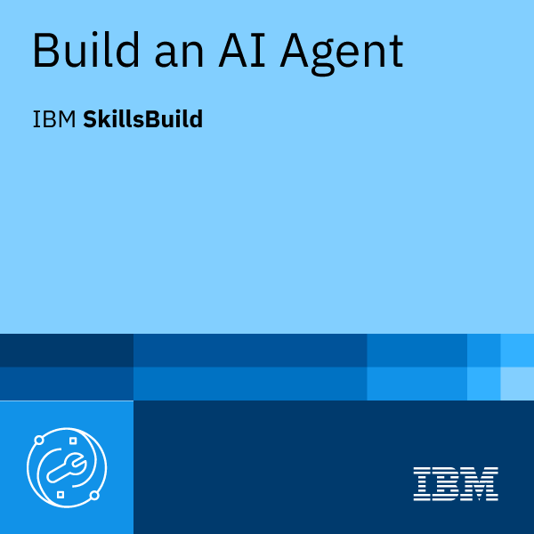
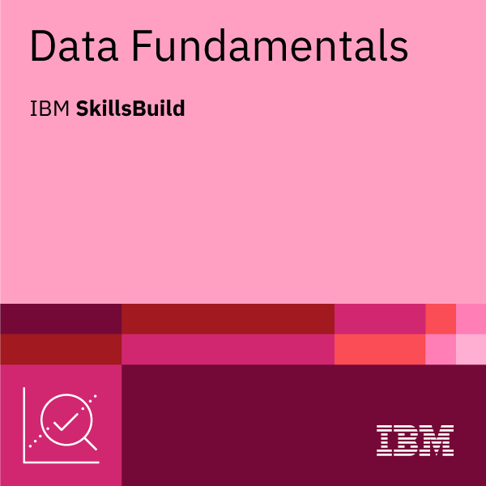
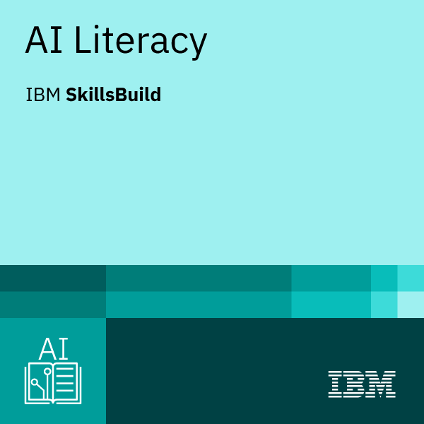

Certificates
This is an overview of certificates I have obtained in the field of data science and related areas. These certificates demonstrate my commitment to continuous learning and professional development. Clicking on the certificate images will take you to the respective credential pages.
Czechitas
Czechitas is a Czech non-profit organization that supports women in upskilling in IT. It provides courses in programming, data analysis, and other IT-related topics. Its strategic partners include well-known companies like Accenture, Cisco, Google, IBM SkillsBuild, or ThermoFisher. I completed the following courses by Czechitas:
Gain Confidence in Your Data: SQL Basics: This course covers an introduction into relational databases, key SQL commands, aggregate functions, table join techniques, and creating tables and views.

Python for Data Analysis: The core of this course is how to work effectively with data using the Pandas library – cleaning the data, combining data files, aggregating them, performing calculations. It also covers creating visualizations using the libraries Matplotlib and Seaborn.
AI in Data Analysis: The course focuses on areas where the use of LLMs can most effectively speed up work, particularly on solutions for no-code, low-code, and code-based analysis implemented in Python. (There was no certificate for this course.)
Udemy
Udemy offers completed hands-on, instructor-led courses, covering practical techniques and tools applied through real project-based exercises. I completed the following courses on the Udemy platform:
Microsoft Excel: Data Analysis with Excel Pivot Tables: A comprehensive Excel Pivot Tables course covering layouts, calculated fields, Pivot Charts, and interactive dashboards, applied across real-world datasets ranging from sports statistics to stock market data.
IBM SkillsBuild
SkillsBuild is an online learning platform that offers courses and certifications in various IT-related topics, including data science, artificial intelligence, cloud computing, and cybersecurity. I completed the following courses by IBM SkillsBuild:
Artificial Intelligence Fundamentals with Capstone Project: Introduction to AI concepts such as natural language processing, computer vision, machine learning, deep learning, chatbots, neural networks and ethics.

Build an AI Agent: This course teaches the classification of AI agents based on their decision-making approach and the steps to structure an AI agent workflow. The focus is on the technical knowledge and practical skills to build an AI agent using IBM watsonx.ai and optimize the performance of an AI agent.

Data Fundamentals: This course covers data analytics concepts, methodologies and applications of data science, and overview the tools and programming languages used in the data ecosystem.

AI Literacy: Explain AI concepts, forms, and enabling technologies; weigh the benefits and risks of AI; discuss principles of AI ethics; and recognize applications of AI in everyday life and work and across industries.
LinkedIn Learning
LinkedIn Learning is a subscription-based platform offering expert-led video courses tied to LinkedIn's professional network, letting you earn certificates that link directly to your profile and skill endorsements. I have finished the following courses on LinkedIn Learning platform:
Data Visualization: Storytelling: Presenting data and information in story form to maximize the effectiveness of the communication.

Telling Stories with Data: Crafting compelling narratives that help audiences visualize information, without complex charts or graphs.

Learning Data Visualization: How to think about the data, the audience, and the goals to create visuals that maximize impact.

Git From Scratch: Short introduction to the basic concepts of Git.

View from Monte Boletto [1238 m] to lake Como (Italy)